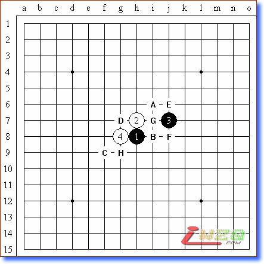
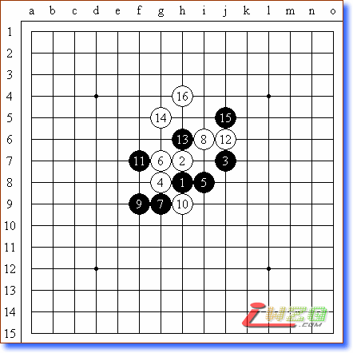
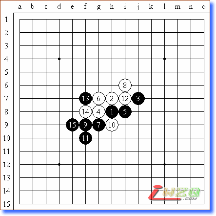
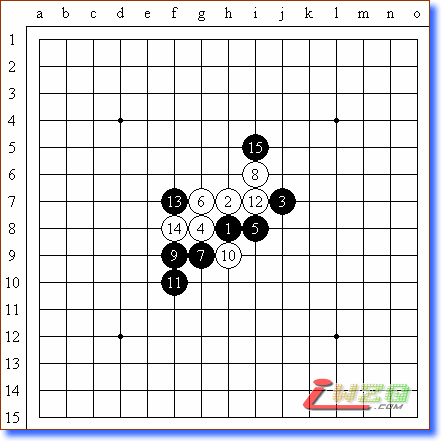
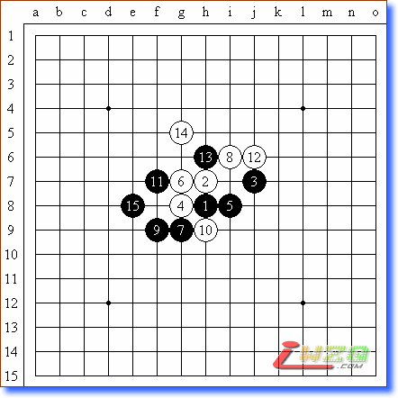

原文由 gerbo 发表于 2007-8-10 13:52:07 :
 残月也必胜~!强~!!
残月也必胜~!强~!! 这次世锦赛吴镝凭借个人的实力从A预打进A组很不容易，为中国五子棋增光了，很为他高兴。就象陈伟七段说的，中国选手也该进A组了。是的，中国五子棋从荒芜到现在，10多年经营下来，第一代、第二代甚至第三代的棋手随着年龄的增长，个人事务的增多，大部分都选择了暂别棋坛，仍然为五子棋发展努力耕耘的，其中绝大多数也淡出一线，不是转型成为活动策划者、组织管理者，就是转型担任了五子棋指导者、教练、老师，仍然还在一线的已经是凤毛麟角。因此，从这个方面来说，如果中国五子棋到今天还要依靠这些人来冲击世锦赛A组――世界五子棋技术较量最高级别的舞台，那么只能说这是中国五子棋的悲哀了。
所以，今天看到吴镝晋级A组，心情比较激动，他做到了几代中国棋手想做而没有做到的事情。同时，这也证明中国五子棋的技术发展已经到了一个崭新的高度，不仅整体实力有了飞速发展，个人实力也有了质的突破。
吴镝作为国内一流棋手，他的棋是以计算精密、刚猛激烈、纵览全局著称的。尽管国内比较出名，但是由于我国棋手同各国棋手面对面交流机会相对欠缺的缘故，因此，对于大量的外国棋手来讲，是非常陌生的。这也成为了他在A组作战比较有利的一个方面。
本轮他的对手是世界排名第7、俄罗斯著名的青年棋手Chingin。Chingin是一名非常优秀的棋手，接触现代五子棋也比较早，在欧洲锦标赛、欧洲青年锦标赛中屡次取得好成绩，代表了俄罗斯的最高水准。不过他由于对吴镝的不了解，因此错误的选择了“残月”作为开局。我查阅了他的个人开局纪录，非常疑惑的是，残月并不是他的首选，松月才是他更擅长的布局。那么可能唯一的解释就是“轻敌”。认为吴镝是名不见经传的棋手，而且在预选赛中又曾经输给尤丽娅，因此没有放在心上，企图在中后盘有所作为。
至此，我已经可以想象当时的情况。吴镝看到Chingin的布局，眼睛已经放光，心里狂喜，因为他看到1分到手了，想不到A组的1分这么好赚。当然已经是“满肚子坏水”的吴镝肯定还是继续装着冷漠的样子，故作思考状，其实根本就是在对执黑必胜的快速回忆。
吴镝在简单的思考后，就选择了交换。残月（下图）的白4也只有实战这个最强的了。黑5一般有从A到H的选点。其中A点必胜；B点现在研究也可以必胜，但是这个估计国外棋手不了解；C点黑白互格，优劣难讲；D、E、F都是白有利的局面；G、H是最近发现的新点，应该是白优势吧。

按照日本定式教科书的下法，白棋到16是一个经典变化，此后将是黑难以取胜的变化。尽管在中盘作战中黑棋略有优势，但是白棋同样有很多的反击手段。这个论断已经被延续了几十年了。

也就因为这样，诸多高手感到在这个局面下黑棋很难取胜，于是纷纷开始别的研究。也因为这样，才有了黑11的变化和黑5下在C点的大量研究。尤其是黑5下在C点，众说纷纭，而且是随着研究的不断深入，不断对“黑优说”或“白优说”进行修正。以下是黑11的2个代表变化。


而中国棋手在近年对这个变化又进行了深入的研究，据我掌握的消息，大概是在2006年第三季度，上海、北京、四川等地的高手相继发现了黑棋可以制胜的关键一手。上海方面黑棋制胜一手的发现权应该归功于丁炯初段。由于是比较高的机密，当时相关地区高手私下约定不得随意使用这个变化，准备留待和外国棋手比赛时用。所以，残月在国内的高级别赛事中悄悄消失了。本来上海、北京棋手准备在上海名人邀请赛时用一下这个变化，但是，后来日本棋手没有布残月局，于是也就搁置了。残月二打必胜其实已经成为国内高级别棋手圈子里公开的秘密，但是就是因为保密工作做的好，所以国外棋手一无所知。于是也造就了吴镝的开门红！

上图中的黑15就是石破天惊的一手，由此整个推翻了残月黑难胜的论断。
估计Chingin看到这个点，整个人都傻掉了，翻遍书籍都查不到这个点，更不用说后面的变化了。当然退一万步说，Chingin也研究出了这个必胜，认为中国棋手不可能知道，那么现在也该尝到惨痛的代价了。不过，看到实战的白16并非最强的防御，不难判断Chingin确实不懂这个变化。或许他还觉得白棋没有什么特别的危险，可以防住。黑17、19是连贯的好手，由此彻底打开了刚才看来还显得比较僵硬的局面。黑棋一下子生动了，左右全部连通。
残月也必胜~!强~!!引用：现在中国人都知道
原文由 gerbo 发表于 2007-8-10 13:52:07 :